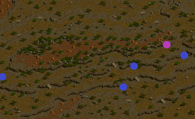
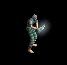

逃亡者たちの山
| 制限Lv | 900～1500 |
|---|---|
| 秘密ダンジョンの入口 | エルベルグ山脈 / エルン山（159.87） |
| 報酬 | 脱獄した逃走犯の討伐数 6～33匹 経験値6000万 異界の清水5個 脱獄した逃走犯の討伐数 0～5匹 経験値4000万 異界の清水1個 追撃者ロッキー・追撃者ループ討伐時低確率でユニーク超越の書を入手可能。 |
| フィールド属性低下 | 全属性抵抗-40％ |
| フィールド特殊効果 | ステータス低下20％ 属性抵抗上限70％ |
<マップ>
秘密ダンジョンの入口 エルベルグ山脈 / エルン山
|  |
● ● |
… 移動ポータル … 秘密ダンジョンの入口 |
秘密ダンジョン 逃亡者たちの山
|
● × ● ▲ |
… 初期位置 … 扉 … 冒険家協会幹部 … 追撃者ロッキー、追撃者ループ |
<手順>
リーダーが冒険家協会幹部に話す。
扉を開ける。
脱獄した逃走犯（Lv975）Zinを6匹以上倒す。非アクティブ。
リーダーがマップ右側(最深部)の冒険家協会幹部と話す。
<補足>
※モンスターのLv帯は950～975
※山賊のいる丘エリアでは、持続ダメージ1100前後あり。
※ 超越の書は極稀に床にドロップすることあり。(GDB8と同じ)
| モンスター | 使用スキル | スキル詳細 | |
|---|---|---|---|
|  | 脱獄した逃走犯 （逃亡魔法師4 Zin） |
ダガーアタック | 物理ダメージ |
| バイパーダガー | 大地+物理ダメージ | ||
| ストンゲイズ | 石化 | ||
| ディメンジョンアーマー | 異常・低下・呪い・全属性抵抗・防御力上昇 | ||
 |
変異したイボ （バッタ悪魔3 Zin） |
ピンシャーアタック | 物理ダメージ |
| バイパーダガー | 大地+物理ダメージ | ||
| メルティングウェポン | 基本攻撃力低下 | ||
| ウォークライ(M) |
風ダメージ 麻痺 |
||
 |
ならず者 （ウィングコング2 Zin） |
石投げ | 物理ダメージ |
| ソーンアーマー | ダメージ反射 | ||
| アイオブザビースト(M) | 麻痺 | ||
 |
追撃者 （狂魔(狂った悪魔…)3 Zin） |
ピアスインパクト | 物理ダメージ |
| ブラッドエキスパンド | 攻撃力低下 防御力上昇 HP回復 |
||
| ライフドレインII | 物理ダメージ HP吸収 |
||
| デビルスピード | 移動・攻撃速度上昇 | ||
 |
追撃者ロッキー 追撃者ループ （剣闘士3 Zin） |
ピストアタック | 物理ダメージ |
| バインディングモルプ |
闇+物理ダメージ 移動・攻撃速度低下 |
||
| スリーピーホール | 物理ダメージ 睡眠 |
||
| ダークウェポン | 闇属性付加 | ||
| アイオブザビホルダー | 毒・暗闇・睡眠・麻痺・石化・混乱 | ||
 |
山賊 （ならず者4 Zin） |
キックアタック | 物理ダメージ |
| スティール(M) | ゴールド奪取 | ||
| 影隠れ(M) | ブラー 命中・回避率上昇 |
||
| RED STONEの情熱II |
火+水+風
+大地+物理ダメージ 攻撃力・防御力・HP上昇 |
||
 |
山賊 （ブラックエルフZin） |
スタートリングライナー(M) | 混乱・武器破壊 |
| ピアシングアロー(M) | 物理ダメージ | ||
| スカルペネトレータ(M) | 致命打 | ||
| 影隠れ(M) | ブラー 命中・回避率上昇 |
||
秘密ダンジョン補足
- 2018/10/4アップデートよりレベル上限が975から1500に引き上げられました。- ミラーテレポーターから1-1-1-8-5でエルン山迂回路に行くと早く着けます。